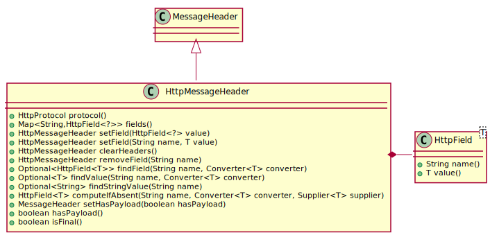

Class HttpMessageHeader
- All Implemented Interfaces:
MessageHeader
- Direct Known Subclasses:
HttpRequest,HttpResponse
public abstract class HttpMessageHeader extends Object implements MessageHeader
The main addition to the base classe MessageHeader is
the handling of header fields.

-
Constructor Summary
Constructors Constructor Description HttpMessageHeader(HttpConstants.HttpProtocol httpProtocol, boolean hasPayload)Creates a new message header. -
Method Summary
Modifier and Type Method Description HttpMessageHeaderclearHeaders()Clear all headers.<T> HttpField<T>computeIfAbsent(String name, Supplier<T> supplier)Returns the header field with the given name, computing and adding it if it doesn’t exist.<T> HttpField<T>computeIfAbsent(String name, Converter<T> converter, Supplier<T> supplier)Returns the header field with the given name, computing and adding it if it doesn’t exist.Map<String,HttpField<?>>fields()Returns all header fields as unmodifiable map.<T> Optional<HttpField<T>>findField(String name, Converter<T> converter)Returns the header field with the given type if it exists.Optional<String>findStringValue(String name)Convenience method for getting the value of a string field.<T> Optional<T>findValue(String name, Converter<T> converter)Convenience method for getting the value of a header field.booleanhasPayload()Returns true if the header is followed by a payload body.booleanisFinal()Returns true if this is a final message.HttpConstants.HttpProtocolprotocol()Return the protocol.HttpMessageHeaderremoveField(String name)Removes a header field from the message.<T> HttpMessageHeadersetField(String name, T value)Sets a header field for the message.HttpMessageHeadersetField(HttpField<?> value)Sets a header field for the message.MessageHeadersetHasPayload(boolean hasPayload)Set the flag that indicates whether this header is followed by a body.
-
Constructor Details
-
HttpMessageHeader
Creates a new message header.- Parameters:
httpProtocol- the HTTP protocolhasPayload- indicates that a body is expected after the header
-
-
Method Details
-
protocol
Return the protocol.- Returns:
- the HTTP protocol
-
fields
Returns all header fields as unmodifiable map.- Returns:
- the headers
-
setField
Sets a header field for the message.- Parameters:
value- the header field’s value- Returns:
- the message header for easy chaining
-
setField
Sets a header field for the message.The converter for the field is looked up using
HttpField.lookupConverter(String).- Type Parameters:
T- the type of the value- Parameters:
name- the field namevalue- the header field’s value- Returns:
- the message header for easy chaining
-
clearHeaders
Clear all headers.- Returns:
- the message header for easy chaining
-
removeField
Removes a header field from the message.- Parameters:
name- the header field’s name- Returns:
- the message header for easy chaining
-
findField
Returns the header field with the given type if it exists.Header fields are provisionally parsed as
HttpFields with value typeString. When an attempt is made to retrieve such a string field with this method, it is automatically converted to the type indicated by the converter. The conversion is permanent, i.e. the field instance is replaced by a properly typed instance.If the conversion fails, the field is considered ill-formatted and handled as if it didn’t exist.
Note that field type conversion may already occur while doing internal checks. This implies that not all fields can initially be accessed as
HttpFields with aStringvalue.- Type Parameters:
T- the type of the value in the header field- Parameters:
name- the field nameconverter- the converter for the value type- Returns:
- the header field if it exists
-
findValue
Convenience method for getting the value of a header field.- Type Parameters:
T- the type of the value in the header field- Parameters:
name- the field nameconverter- the converter for the value type- Returns:
- the value if the header field exists
-
findStringValue
Convenience method for getting the value of a string field.- Parameters:
name- the field name- Returns:
- the value if the header field exists
- See Also:
findField(String, Converter)
-
computeIfAbsent
Returns the header field with the given name, computing and adding it if it doesn’t exist.- Type Parameters:
T- the type of the header field’s value- Parameters:
name- the field nameconverter- the converter for the value typesupplier- the function that computes a value for a new field.- Returns:
- the header field
-
computeIfAbsent
Returns the header field with the given name, computing and adding it if it doesn’t exist.The converter for the field is looked up using
HttpField.lookupConverter(String).- Type Parameters:
T- the type of the header field’s value- Parameters:
name- the field namesupplier- the function that computes a value for a new field.- Returns:
- the header field
-
setHasPayload
Set the flag that indicates whether this header is followed by a body.- Parameters:
hasPayload- new value- Returns:
- the message for easy chaining
-
hasPayload
Returns true if the header is followed by a payload body.- Specified by:
hasPayloadin interfaceMessageHeader- Returns:
- true if payload body data follows
-
isFinal
Returns true if this is a final message.A message is final if the value of the
Connectionheader field includes the value “close”.- Specified by:
isFinalin interfaceMessageHeader- Returns:
- the result
-